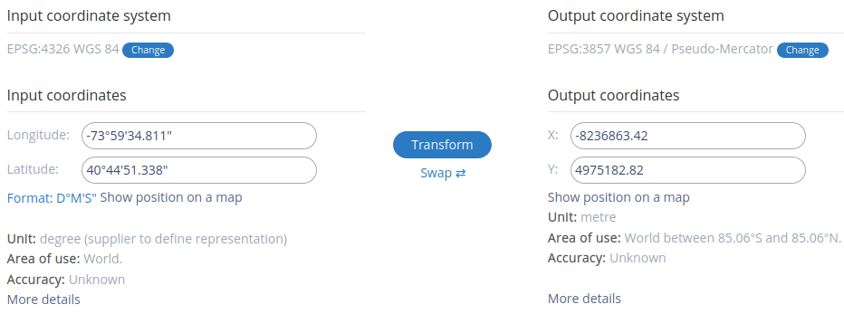
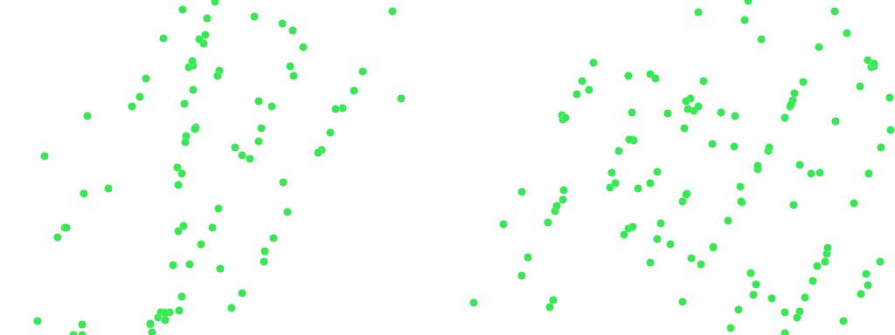

Quick Start¶
本文以纽约出租车数据集为例，演示如何使用 Arctern-Spark 完成数据的导入、运算和展示。
数据准备¶
在 Arctern-Spark 运行环境中下载纽约出租车数据集，该数据集包含2009年纽约市出租车运营记录，各字段的含义如下：
VendorID: string，运营商名称；
tpep_pickup_datetime: string，上车时间；
tpep_dropoff_datetime: string，下车时间；
passenger_count: long，乘客数量；
trip_distance: double，行程距离；
pickup_longitude: double，上车地点-经度；
pickup_latitude: double，上车地点-纬度；
dropoff_longitude: double，下车地点-经度；
dropoff_latitude: double，下车地点-纬度；
fare_amount: double，行程费用；
tip_amount: double，小费；
total_amount: double，总费用；
buildingid_pickup: long，上车地点所在建筑的id；
buildingid_dropoff: long，下车地点所在建筑的id；
buildingtext_pickup: string，上车地点所在建筑的轮廓描述；
buildingtext_dropoff: string，下车地点所在建筑的轮廓描述。
该数据中时间格式为：yyyy-MM-dd HH:mm::ss XXXXX，如2009-04-12 03:16:33 +00:00。
启动 PySpark¶
以下通过 PySpark 交互界面展示 Arctern-Spark 的使用方法，使用以下命令打开 PySpark 交互界面：
cd ${SPARK_HOME}
./bin/pyspark
打开交互界面后，会自动创建一个名为 spark 的 SparkSession：
Python 3.7.6 | packaged by conda-forge | (default, Mar 23 2020, 23:03:20)
[GCC 7.3.0] on linux
Type "help", "copyright", "credits" or "license" for more information.
20/04/23 03:35:17 WARN NativeCodeLoader: Unable to load native-hadoop library for your platform... using builtin-java classes where applicable
Welcome to
____ __
/ __/__ ___ _____/ /__
_\ \/ _ \/ _ `/ __/ '_/
/__ / .__/\_,_/_/ /_/\_\ version 3.0.0-preview2
/_/
Using Python version 3.7.6 (default, Mar 23 2020 23:03:20)
SparkSession available as 'spark'.
>>>
注册 Arctern-Spark 功能函数¶
在使用 Arctern-Spark 之前需要在界面中输入以下代码对 Arctern-Spark 提供的功能函数进行注册：
>>> from pyspark.sql.types import *
>>> from arctern_pyspark import register_funcs
>>> spark.conf.set("spark.sql.execution.arrow.pyspark.enabled", "true")
>>> spark.conf.set("spark.sql.execution.arrow.maxRecordsPerBatch", "5000")
>>> register_funcs(spark)
加载数据¶
根据测试数据各字段的名称和数据类型，构建导入测试数据的 schema。因为 Spark 不支持原始数据的时间格式，需要先将其作为字符串导入，之后转换为TimeStamp格式。
>>> nyc_schema = StructType([
... StructField("VendorID",StringType(),True),
... StructField("tpep_pickup_datetime",StringType(),True),
... StructField("tpep_dropoff_datetime",StringType(),True),
... StructField("passenger_count",LongType(),True),
... StructField("trip_distance",DoubleType(),True),
... StructField("pickup_longitude",DoubleType(),True),
... StructField("pickup_latitude",DoubleType(),True),
... StructField("dropoff_longitude",DoubleType(),True),
... StructField("dropoff_latitude",DoubleType(),True),
... StructField("fare_amount",DoubleType(),True),
... StructField("tip_amount",DoubleType(),True),
... StructField("total_amount",DoubleType(),True),
... StructField("buildingid_pickup",LongType(),True),
... StructField("buildingid_dropoff",LongType(),True),
... StructField("buildingtext_pickup",StringType(),True),
... StructField("buildingtext_dropoff",StringType(),True)
... ])
加载测试数据，并创建临时表 origin_nyc_taxi：
>>> origin_df = spark.read.format("csv") \
... .option("header",True) \
... .option("delimiter",",") \
... .schema(nyc_schema) \
... .load("/tmp/0_2M_nyc_taxi_and_building.csv") \
... .createOrReplaceTempView("origin_nyc_taxi")
查询数据表 origin_nyc_taxi 的行数，验证数据是否加载成功：
>>> spark.sql("select count(*) from origin_nyc_taxi").show()
+--------+
|count(1)|
+--------+
| 199999|
+--------+
将 origin_nyc_taxi 中日期数据从 String 类型转换成 Timestamp 类型，并创建新的临时表 nyc_taxi：
>>> nyc_sql = "select VendorID, " \
... "to_timestamp(tpep_pickup_datetime,'yyyy-MM-dd HH:mm:ss XXXXX') as tpep_pickup_datetime, " \
... "to_timestamp(tpep_dropoff_datetime,'yyyy-MM-dd HH:mm:ss XXXXX') as tpep_dropoff_datetime, " \
... "passenger_count, " \
... "trip_distance, " \
... "pickup_longitude, " \
... "pickup_latitude, " \
... "dropoff_longitude, " \
... "dropoff_latitude, " \
... "fare_amount, " \
... "tip_amount, " \
... "total_amount, " \
... "buildingid_pickup, " \
... "buildingid_dropoff, " \
... "buildingtext_pickup, " \
... "buildingtext_dropoff " \
... "from origin_nyc_taxi where " \
... "(pickup_longitude between -180 and 180) and (pickup_latitude between -90 and 90) and " \
... "(dropoff_longitude between -180 and 180) and (dropoff_latitude between -90 and 90)"
>>> nyc_taxi_df = spark.sql(nyc_sql).cache()
>>> nyc_taxi_df.createOrReplaceTempView("nyc_taxi")
查询转换后的日期数据：
>>> spark.sql("select tpep_pickup_datetime,tpep_dropoff_datetime from nyc_taxi limit 10").show()
+--------------------+---------------------+
|tpep_pickup_datetime|tpep_dropoff_datetime|
+--------------------+---------------------+
| 2009-04-12 11:16:33| 2009-04-12 11:20:32|
| 2009-04-14 19:22:00| 2009-04-14 19:38:00|
| 2009-04-15 17:34:58| 2009-04-15 17:49:35|
| 2009-05-01 02:58:19| 2009-05-01 03:05:27|
| 2009-04-26 21:03:04| 2009-04-26 21:27:54|
| 2009-04-03 10:56:00| 2009-04-03 11:11:00|
| 2009-04-03 01:03:00| 2009-04-03 01:07:00|
| 2009-04-23 16:10:00| 2009-04-23 16:21:00|
| 2009-04-21 20:18:15| 2009-04-21 20:29:33|
| 2009-04-10 16:54:21| 2009-04-10 17:07:14|
+--------------------+---------------------+
使用 Arctern-Spark 提供的 GeoSpatial 函数处理数据¶
根据经纬度数据创建坐标点数据：
>>> spark.sql("select st_astext(st_point(pickup_longitude, pickup_latitude)) from nyc_taxi limit 10").show(10,0)
+------------------------------------------------------+
|ST_AsText(ST_Point(pickup_longitude, pickup_latitude))|
+------------------------------------------------------+
|POINT (-73.993003 40.747594) |
|POINT (-73.959908 40.776353) |
|POINT (-73.955183 40.773459) |
|POINT (-73.985233 40.744682) |
|POINT (-73.997969 40.682816) |
|POINT (-73.996458 40.758197) |
|POINT (-73.98824 40.74896) |
|POINT (-73.985185 40.735828) |
|POINT (-73.989726 40.767795) |
|POINT (-73.992669 40.768327) |
+------------------------------------------------------+
将坐标点数据使用的空间坐标系从EPSG:4326坐标系转换为到EPSG:3857坐标系，更多不同空间坐标系标准的详细信息请查看维基百科相关页面。
>>> spark.sql("select " \
... "st_astext("
... "st_point(pickup_longitude, pickup_latitude)) as epsg_4326," \
... "st_astext(" \
... "st_transform(" \
... "st_point(pickup_longitude, pickup_latitude), 'epsg:4326', 'epsg:3857')) as epsg_3857 " \
... "from nyc_taxi " \
... "limit 10").show(10,0)
+----------------------------+------------------------------------------+
|epsg_4326 |epsg_3857 |
+----------------------------+------------------------------------------+
|POINT (-73.993003 40.747594)|POINT (-8236863.41622516 4975182.82064036)|
|POINT (-73.959908 40.776353)|POINT (-8233179.29767736 4979409.53917853)|
|POINT (-73.955183 40.773459)|POINT (-8232653.31308336 4978984.12438949)|
|POINT (-73.985233 40.744682)|POINT (-8235998.4637817 4974754.94509358) |
|POINT (-73.997969 40.682816)|POINT (-8237416.22881644 4965669.06930105)|
|POINT (-73.996458 40.758197)|POINT (-8237248.02506586 4976740.93379202)|
|POINT (-73.98824 40.74896) |POINT (-8236333.20149052 4975383.54069413)|
|POINT (-73.985185 40.735828)|POINT (-8235993.12044614 4973454.09515417)|
|POINT (-73.989726 40.767795)|POINT (-8236498.62225383 4978151.57629304)|
|POINT (-73.992669 40.768327)|POINT (-8236826.23551524 4978229.7716468) |
+----------------------------+------------------------------------------+
可以在EPSG网站验证验证转换结果的正确性：

在指定地理区域（经度范围：-73.991504至-73.945155；纬度范围：40.770759至40.783434）中随机选取200个坐标点，并将这些坐标点从EPSG:4326坐标系转到EPSG:3857坐标系。
>>> pos1=(-73.991504, 40.770759)
>>> pos2=(-73.945155, 40.783434)
>>> limit_num=200
>>> pickup_sql = "select st_transform(st_point(pickup_longitude, pickup_latitude), 'epsg:4326', 'epsg:3857') " \
... "from nyc_taxi where " \
... f"(pickup_longitude between {pos1[0]} and {pos2[0]}) and (pickup_latitude between {pos1[1]} and {pos2[1]}) limit {limit_num}"
>>> pickup_df = spark.sql(pickup_sql)
使用 Arctern-Spark 绘制图层¶
导入绘图需要使用的模块：
>>> from arctern.util import save_png
>>> from arctern.util.vega import vega_pointmap
>>> from arctern_pyspark import pointmap
通过 Arctern-Spark 提供的绘图函数绘制图层：
vega = vega_pointmap(1024, 384, bounding_box=[pos1[0], pos1[1], pos2[0], pos2[1]], point_size=10, point_color="#2DEF4A", opacity=1, coordinate_system="EPSG:4326")
res = pointmap(vega, pickup_df)
save_png(res, '/tmp/arctern_pointmap.png')
绘图结果如下：
